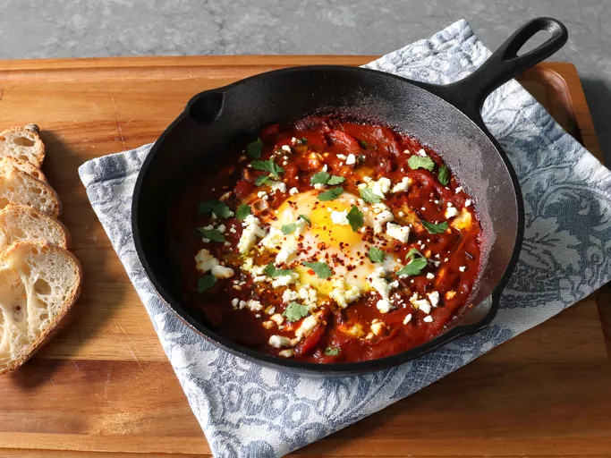

Shakshuka

A Brief Tale
This recipe is the pinnacle of low effort max taste. Perfect for when you want
to treat your tastebuds.
Ingredients
- tomatoes
- eggs
- onion
- chilis (optional)
- garlic
- tomato paste
- tumeric, cumin, cayenne
- olive oil
Steps
- Heat oil and add diced onion and chilis.
- Add tomatoes, tomato paste, and a bit of water. Season with salt and pepper. Cook 2-3 minutes.
- Add other spices a bit of water if needed. Make space to crack the eggs
and do so without breaking the yolks.
- Cover and cook until eggs reach desired doneness.
- Serve from pan with bread, optionally top with feta and chili flakes.